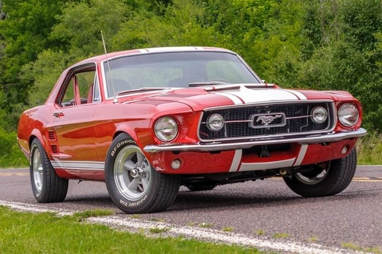
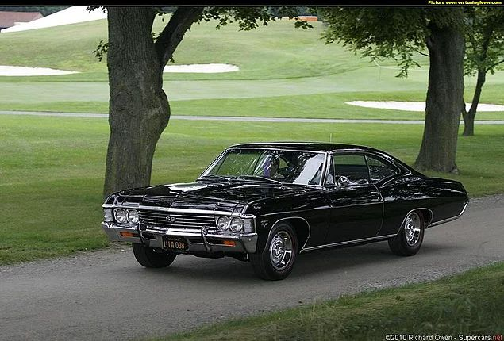
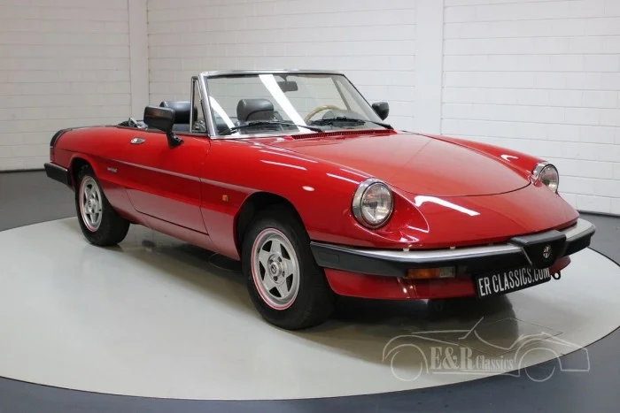
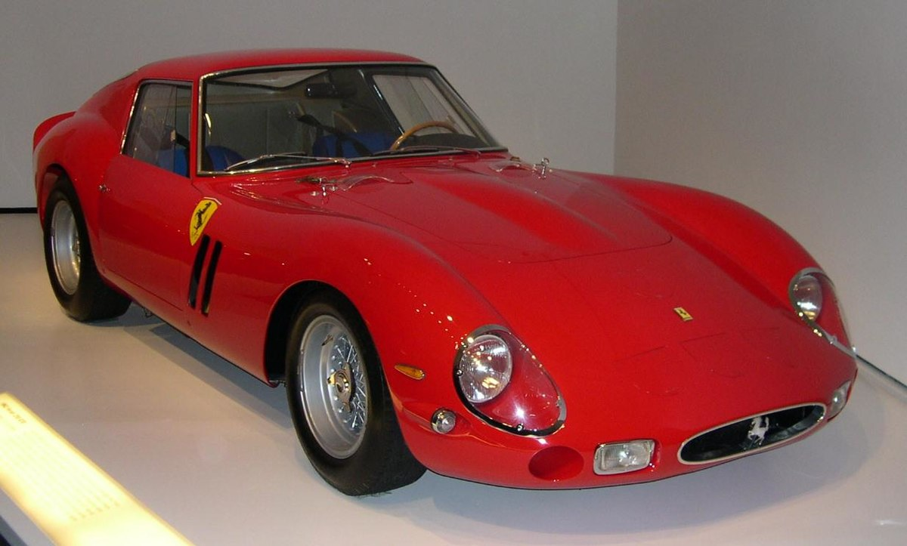
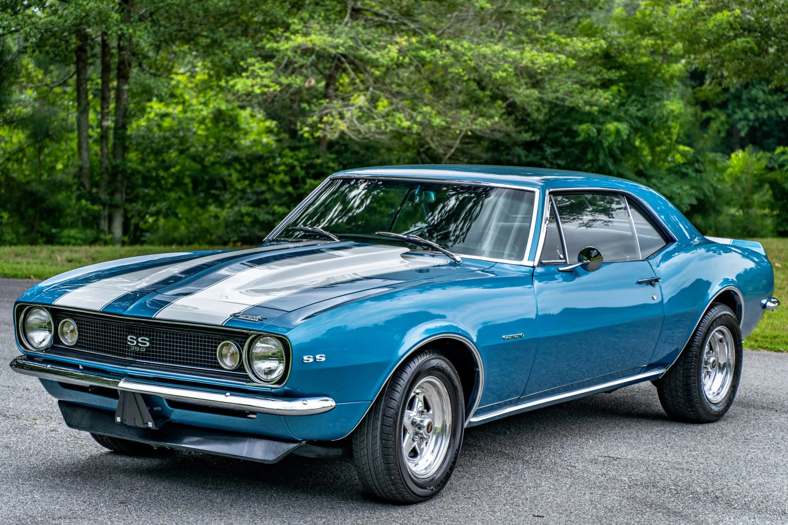
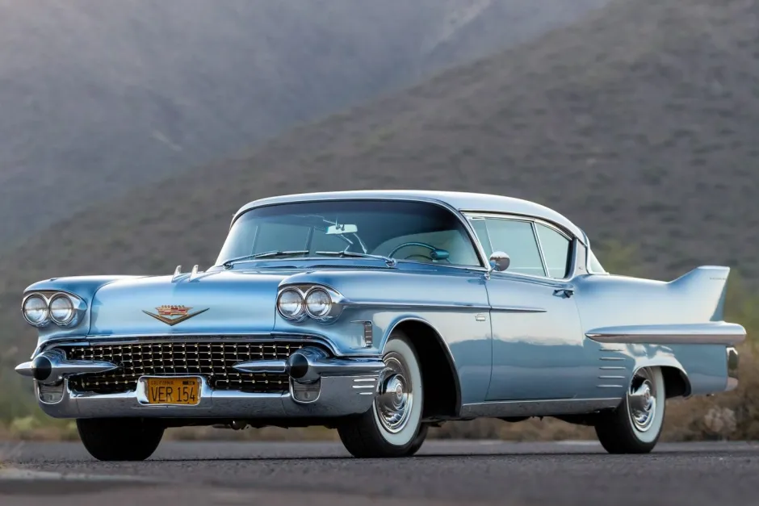
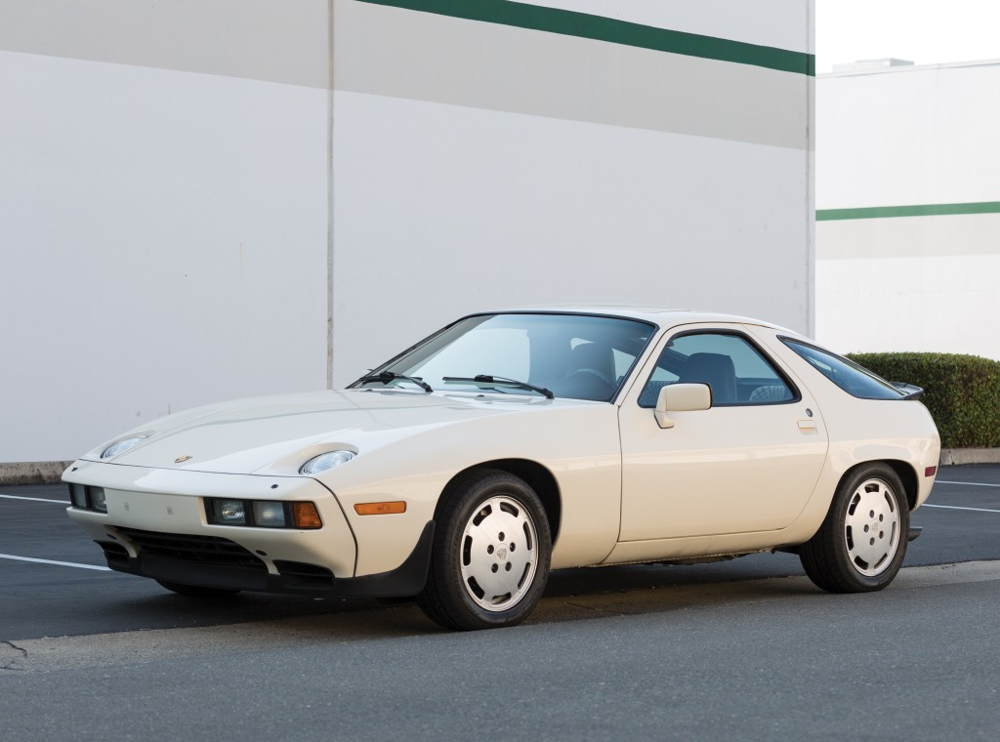
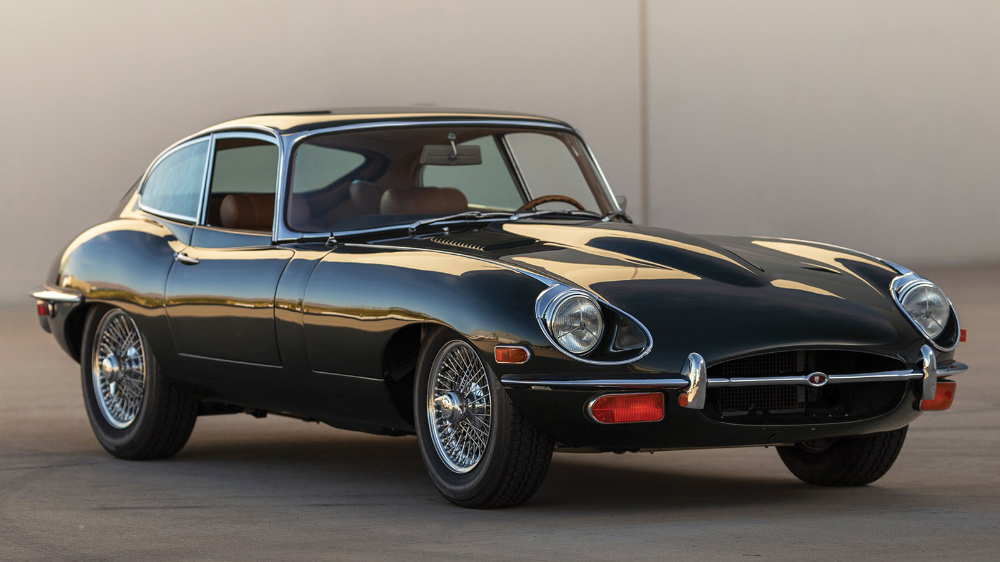

Ford Mustang, Ford tarafından Ford Falcon modelinden esinlenerek üretilen otomobil, ilk kez 9 Mart 1964'te Ford'un Michigan Dearborn'daki tesislerinde üretilmiştir. 17 Nisan 1964 yılındaki New York Fuarında görücüye çıkan otomobil 1964 yılında başrolünde Sean Connery'in oynadığı James Bond Goldfinger(Altın Parmak) filminde boy göstermiştir. Ayrıca 17 Şubat 2008'de ABD'de gösterime giren Knight Rider sinema filminde de kendi kendine hareket edebilebilen, konuşabilen akıllı otomobil KITT ise 5. nesil Ford Mustang GT500KR Shelby kullanılmaktadır.

CLASSIC CARS

Ford
Ford Mustang

Chevrolet
Chevrolet Impala
Chevrolet Impala serisi 1950'lerin sonlarına doğru Amerikan halkının günlük hayatta kullanımı için General Motors tarafından dizayn edilen otomobil modelidir. Modelin ana hatları, o sıralarda General Motors'un baş mühendisi olan Ed Cole tarafından ortaya çıkartılmıştır. Model, 1958 ile 1965 yılları arasında Chevrolet'in en pahalı modeli olma unvanını taşırken 1965 yılı itibarıyla bu unvanı Chevrolet'nin yeni çıkartmış olduğu Caprice modeline bırakmıştır. Chevrolet Impala serisi yapılan son araştırmalara göre 1958-1996 yılları arasında ABD'de en çok satan 8. model olarak otomobil tarihine geçmiştir. Ayrıca Impala, Reuters'in bir anketine göre de 2008'in en çok satan 20 modelinden biri durumundadır.

Dodge
Dodge Charger
Dodge Charger, Dodge tarafından 1966-1978 yılları arasında üretilen muscle car modelidir. Ayrıca 1983-1987 yılları arasında önden çekişli bir hatchback olarak üretilmiş olup Charger adı 2006 yılında yeni bir arkadan itişli dört kapılı sedan olarak dönmüştür.

Alfa Romeo
Alfa Romeo Giulietta Spider
Alfa Romeo Spider, Alfa Romeo tarafından 1966-1994 yılları arasında üretilen bir spor otomobil modelidir. Spider, Alfa Romeo Giulietta Spider'ın ardılı olup neredeyse otuz yıl boyunca sadece estetik ve mekanik değişikliklerle üretimde kaldı. Araç, 2007 yılında çıkan Alfa Romeo 8C Competizione'ye kadar son arkadan itişli Alfa Romeo modeli olmuştur.

Ferrari
Ferrai 250 GTO
Ferrari 250 GTO (Tipo 838), Ferrari tarafından 1962-1964 yılları arasında FIA Group 3 kategorisi için üretilen bir spor otomobil modelidir. Toplam olarak 39 adet üretilmiştir. Ferrari 250 GTO, 2004'te Sports Car International tarafından 1960'lı yılların En İyi Spor Otomobilleri listesine altıncı sırada yer aldı ve tüm zamanların en iyi spor otomobili olarak seçilmiştir. Benzer bir şekilde, Motor Trend Classic tarafından "Tüm Zamanların En Büyük Ferrarileri" listesinde ilk sırada yer aldı. Popular Mechanics, tarafından "Tüm Zamanların En Ateşli Otomobili" seçildi.

Chevrolet
Chevrolet Camaro
Chevrolet Camaro Amerikan otomobil firması Chevrolet tarafından imal edilen, orta boyutlu olarak sınıflandırılan, pony car ve bazı sürümlerinde muscle car olarak nitelenebilecek bir otomobildir.[5][6] İlk olarak 29 Eylül 1966'da 1967 model yılı için satışa çıktı ve Ford Mustang'e rakip bir model olarak tasarlanmıştır. Camaro, platformunu ve ana bileşenlerini yine 1967'de tanıtılan Pontiac Firebird ile paylaşmıştır. Üretim 2002'de sona ermeden önce Camaro'nun dört farklı nesli geliştirildi. Model adı, beşinci nesil Camaro'ya dönüşen bir konsept otomobilde yeniden canlandırıldı; 16 Mart 2009'dan bu yana süren üretimle 5 milyondan fazla üretildi.

Cadillac
Cadillac Coupe De Ville
Cadillac DeVille, Cadillac tarafından 1949-2005 yılları arasında üretilen üst sınıf lüks otomobil modelidir. Araç, ilk çıktığında Series 62'nin bir üst modeli olup son modelleri Cadillac'ın model gammındaki en büyük otomobildi. 2005 yılında yerini DTS'e bırakmıştır.

Porsche
Porsche 928S
Porsche 928, Alman otomobil üreticisi Porsche tarafından 1978-1995 yılları arasında üretilmiş GT (grand tourer) otomobil. Hayranları tarafından 'karadaki köpekbalığı' benzetmesi yapılmıştır. 1986 yılında Amerika Birleşik Devletleri Utah çölünde yapılan denemede 172 mil (275 km/saat) hız yapmıştır.

Jaguar
Jaguar E-Type
Jaguar E-Type, Jaguar Cars tarafından 1961-1975 yılları arasında üretilen bir spor otomobil modelidir. Araç, Le Mans 24 Saat'i üç yıl üst üste kazanan Jaguar D-Type yarış otomobilini temelinde geliştirilmiştir. E-Type güzellik, yüksek performans ve rekabetçi fiyatlandırma sayesinde dönemin otomobil dünyasının simgesi idi. Çoğu otomobilin kampana fren, sıradan arka akslar ve vasat bir performans sergilediği bir dönemde, E-Type 0–100 km/h hızlanmasını 7 saniyede gerçekleştirmesi, 150 mph (241 km/h) son hızı, monokok konstrüksiyon, disk frenler, rak ve pinyon direksiyon gibi yeniliklere sahipti ve bağımsız ön ve arka süspansiyonları ile neredeyse rakipsizdi. Piyasaya çıktığında Enzo Ferrari aracı "şimdiye kadarki en güzel araba" diye tarif etmiştir. Mart 2008 tarihinde The Daily Telegraph Tüm Zamanların En Güzel 100 Otomobili listesinde birinci sırada yer almıştır.